LinearModelStepwiseAlgorithm¶
-
class
otlm.LinearModelStepwiseAlgorithm(*args)¶ Class used to create a linear model from numerical samples.
Available usages:
LinearModelStepwiseAlgorithm()
LinearModelStepwiseAlgorithm(inputSample, basis, outputSample, minimalIndices, isForward, penalty, maximumIterationNumber)
LinearModelStepwiseAlgorithm(inputSample, basis, outputSample, minimalIndices, startIndices, penalty, maximumIterationNumber)
Parameters: inputSample, outputSample :
SampleThe input and output samples of a model.
basis :
BasisFunctional basis to estimate the trend.
minimalIndices :
IndicesThe indices of minimal model
isForward :
Boolthe boolean value used for the stepwise regression method direction FORWARD and BACKWARD.
startIndices :
IndicesThe indices of start model used for the stepwise regression method direction BOTH.
penalty :
NumericalScalarThe multiple of the degrees of freedom used for the penalty of the stepwise regression method : - 2 Akaike information criterion (AIC) - log(n) Bayesian information criterion (BIC)
maximumIterationNumber :
UnsignedIntegerThe maximum number of iterations of the stepwise regression method.
See also
LinearModel,LinearModelResultNotes
This class is used in order to create a linear model from numerical samples, by using the stepwise method. The linear regression model between the scalar variable 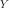 and the 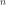-dimensional one
 writes as follows:
writes as follows: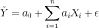
where 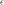 is the residual, supposed to follow the standard Normal distribution.
Each coefficient 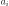 is evaluated from both samples
 and
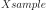 and is accompagnied by a confidence interval and a p-value (which
tests if they are significantly different from 0.0).
and
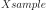 and is accompagnied by a confidence interval and a p-value (which
tests if they are significantly different from 0.0).By default, input sample is normalized. It is possible to set Resource key (
LinearModelStepwiseAlgorithm-normalize) to False in order to discard this normalization.This class enables to test the quality of the model. It provides only numerical tests. If
 is scalar, a graphical validation test exists, that draws
the residual couples
is scalar, a graphical validation test exists, that draws
the residual couples  , where the residual
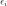 is evaluated on the samples
, where the residual
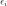 is evaluated on the samples  :
:
 with
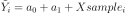. The OpenTURNS method is
with
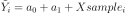. The OpenTURNS method is
VisualTest_DrawLinearModelResidual.Methods
getClassName()Accessor to the object’s name. getDirection()getFormula()getId()Accessor to the object’s id. getInputSample()getMaximumIterationNumber()getName()Accessor to the object’s name. getOutputSample()getPenalty()getResult()getShadowedId()Accessor to the object’s shadowed id. getVisibility()Accessor to the object’s visibility state. hasName()Test if the object is named. hasVisibleName()Test if the object has a distinguishable name. run()setName(*args)Accessor to the object’s name. setShadowedId(*args)Accessor to the object’s shadowed id. setVisibility(*args)Accessor to the object’s visibility state. -
__init__(*args)¶
-
getClassName()¶ Accessor to the object’s name.
Returns: class_name : str
The object class name (object.__class__.__name__).
-
getId()¶ Accessor to the object’s id.
Returns: id : int
Internal unique identifier.
-
getName()¶ Accessor to the object’s name.
Returns: name : str
The name of the object.
-
getShadowedId()¶ Accessor to the object’s shadowed id.
Returns: id : int
Internal unique identifier.
-
getVisibility()¶ Accessor to the object’s visibility state.
Returns: visible : bool
Visibility flag.
-
hasName()¶ Test if the object is named.
Returns: hasName : bool
True if the name is not empty.
-
hasVisibleName()¶ Test if the object has a distinguishable name.
Returns: hasVisibleName : bool
True if the name is not empty and not the default one.
-
setName(*args)¶ Accessor to the object’s name.
Parameters: name : str
The name of the object.
-
setShadowedId(*args)¶ Accessor to the object’s shadowed id.
Parameters: id : int
Internal unique identifier.
-
setVisibility(*args)¶ Accessor to the object’s visibility state.
Parameters: visible : bool
Visibility flag.
-